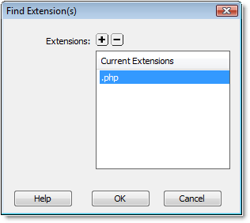

Finding Extensions
To view/edit the file extensions that are included in this site structure, the Find Extension(s) dialog is provided.
- From the Site-Specific Code Hints dialog, select the Extensions button to load the Find Extension(s) dialog.
- To add another extension to the Current Extension list, choose the Add icon.
- Select any undesired file extension and choose the Remove icon to delete it from the Current Extensions list.
- Click OK when finished.
